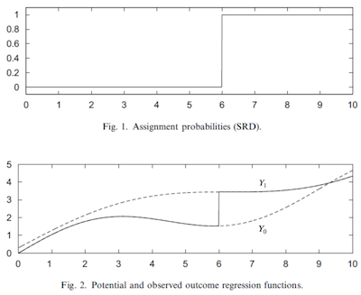
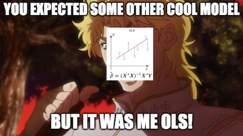
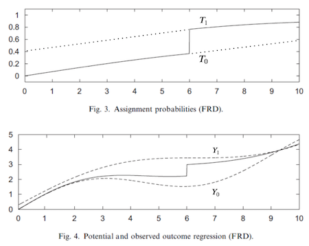

import warnings
warnings.filterwarnings('ignore')
import pandas as pd
import numpy as np
from matplotlib import style
from matplotlib import pyplot as plt
import seaborn as sns
import statsmodels.formula.api as smf
%matplotlib inline
style.use("fivethirtyeight")第十六章: 断点回归
我们不会停下来想太多，但大自然的平滑程度令人印象深刻。没有先发芽就不能种树，不能从一个地方传送到另一个地方，伤口需要时间来愈合。即使在社交领域，顺畅似乎也是常态。您无法在一天内发展业务，建立财富需要一致性和辛勤工作，并且需要数年才能了解线性回归的工作原理。在正常情况下，大自然非常有凝聚力，不会跳来跳去。
当智慧和动物的灵魂被抱在一起时，它们就不会分离。
-道德经，老子。
这意味着当我们确实看到跳跃和尖峰时，它们可能是人为的并且通常是人为的情况。这些事件通常伴随着对正常事物方式的反事实：如果发生了一件奇怪的事情，这让我们对如果大自然以不同的方式工作会发生什么有了一些了解。探索这些人工跳跃是回归不连续设计的核心。
基本设置是这样的。假设您有一个干预变量 \(T\) 和潜在结果 \(Y_0\) 和 \(Y_1\)。处理 T 是观察到的运行变量 \(R\) 的不连续函数，使得
\[ D_i = \mathcal{1}\{R_i>c\} \]
换句话说，这就是说当 \(R\) 低于阈值 \(c\) 时处理为零，否则为 1。这意味着我们可以在 \(R>c\) 时观察 \(Y_1\) 和在 \(R<c\) 时观察 \(Y_0\)。为了解决这个问题，请将潜在结果视为我们无法完全观察到的 2 个函数。 \(Y_0(R)\) 和 \(Y_1(R)\) 都在那里，我们只是看不到。阈值充当一个开关，让我们可以看到其中一个或另一个功能，但不能同时看到两者，就像下图一样：

断点回归的想法是比较刚好高于和低于阈值的结果，以确定阈值处的干预效果。这被称为 sharp RD 设计，因为在阈值处获得干预的概率从 0 跳到 1，但我们也可以考虑 fuzzy RD 设计，其中概率也会跳跃，但是是一种不那么剧烈的方式。
酒精会杀死你吗？
一个非常相关的公共政策问题是最低饮酒年龄应该是多少。大多数国家，包括巴西，将其设定为 18 岁，但在美国（大多数州），目前是 21 岁。那么，美国是否过于谨慎，应该降低最低饮酒年龄？还是其他国家应该提高法定饮酒年龄？
看待这个问题的一种方法是从 死亡率的角度 (Carpenter and Dobkin, 2009)。从公共政策的角度来看，人们可以争辩说我们应该尽可能地降低死亡率。如果饮酒会大幅增加死亡率，我们应该避免降低最低饮酒年龄。这与降低因饮酒导致的死亡人数的目标是一致的。
为了估计酒精对死亡的影响，我们可以利用法定饮酒年龄本质上是施加了不连续性这一事实。在美国，21 岁以下的人不喝酒（或少喝酒），而 21 岁以上的人则喝酒。这意味着饮酒的概率在 21 岁时会增加，这是我们可以用 RDD 来探索的。
为此，我们可以获取一些按年龄汇总的死亡率数据。 每行是一组人的平均年龄和按照所有原因（all）、移动车辆事故（mva）和自杀（suicide）分别统计的平均死亡率。
drinking = pd.read_csv("./data/drinking.csv")
drinking.head()[["agecell", "all", "mva", "suicide"]]| agecell | all | mva | suicide | |
|---|---|---|---|---|
| 0 | 19.068493 | 92.825400 | 35.829327 | 11.203714 |
| 1 | 19.150684 | 95.100740 | 35.639256 | 12.193368 |
| 2 | 19.232876 | 92.144295 | 34.205650 | 11.715812 |
| 3 | 19.315070 | 88.427760 | 32.278957 | 11.275010 |
| 4 | 19.397260 | 88.704940 | 32.650967 | 10.984314 |
为了提升视觉效果（以及我们将在后面看到的另一个重要原因）我们将以阈值 21为中点将 agecell这个变量去中心化。
drinking["agecell"] -= 21如果我们将多个结果变量（all、mva、suicide）与 x 轴上的对应变量一起绘制，图形会提示我们，当我们越过法定饮酒年龄时，死亡率会出现一定跳跃。
plt.figure(figsize=(8,8))
ax = plt.subplot(3,1,1)
drinking.plot.scatter(x="agecell", y="all", ax=ax)
plt.title("Death Cause by Age (Centered at 0)")
ax = plt.subplot(3,1,2, sharex=ax)
drinking.plot.scatter(x="agecell", y="mva", ax=ax)
ax = plt.subplot(3,1,3, sharex=ax)
drinking.plot.scatter(x="agecell", y="suicide", ax=ax);
有一些线索，但我们需要的不止这些。在阈值周围，饮酒对死亡率的影响究竟是什么？该估计的标准误差是多少？
RDD 估计
RDD 依赖的关键假设是阈值处潜在结果的平滑性。用比较正式地表述来说，当运行变量从右侧和左侧接近阈值时，潜在结果的极限应该是相同的。
\[ \lim_{r \to c^-} E[Y_{ti}|R_i=r] = \lim_{r \to c^+} E[Y_{ti}|R_i=r] \]
如果这是真的，我们可以在阈值处找到因果关系
\[ \begin{align} \lim_{r \to c^+} E[Y_{ti}|R_i=r] - \lim_{r \to c^-} E[Y_{ti}|R_i=r]=&\lim_{r \to c^+} E[Y_{1i}|R_i=r] - \lim_{r \to c^-} E[Y_{0i}|R_i=r] \\ =& E[Y_{1i}|R_i=r] - E[Y_{0i}|R_i=r] \\ =& E[Y_{1i} - Y_{0i}|R_i=r] \end{align} \]
从其本身意义来说，这是一种局部平均干预效果（LATE），因为我们只能在阈值处知道它。在这种情况下，我们可以将 RDD 视为局部随机试验。对于那些处于阈值附近的人来说，干预可能会采取任何一种方式，有些人可能低于门槛，有些人则可能超过了门槛。在我们的示例中，在同一时间点，有些人刚刚超过 21 岁，有些人刚刚低于 21 岁。决定这一点的是某人是否在几天后出生，这是非常随机的。基于这个原因，RDD 提供了一个非常引人注目的因果故事。它不是 RCT 的黄金标准，但很接近。
现在，要估计阈值处的干预效果，我们需要做的就是估计上面公式中的两个极限值并进行比较。最简单的方法是运行线性回归

为了使其工作，我们将一个高于阈值的虚拟变量与运行变量进行交叉
\[ y_i = \beta_0 + \beta_1 r_i + \beta_2 \mathcal{1}\{r_i>c\} + \beta_3 \mathcal{1}\{r_i>c\} r_i \]
本质上，这与在阈值之上拟合线性回归并在阈值之下拟合另一个线性回归相同。参数 \(\beta_0\) 是低于阈值的回归的截距，而 \(\beta_0+\beta_2\) 是高于阈值的回归的截距。
这就是将运行变量在阈值处取零的技巧发挥作用的地方。在这个预处理步骤之后，阈值变为零。这导致截距 \(\beta_0\) 成为阈值处的预测值，用于低于它的回归。换句话说，\(\beta_0=\lim_{r \to c^-} E[Y_{ti}|R_i=r]\)。同理，\(\beta_0+\beta_2\) 是上述结果的极限。威奇的意思是
\[ \lim_{r \to c^+} E[Y_{ti}|R_i=r] - \lim_{r \to c^-} E[Y_{ti}|R_i=r]=\beta_2=E[ATE |R=c] \]
下面的代码展示了当我们想估计在21 岁时饮酒对死亡造成的影响。
rdd_df = drinking.assign(threshold=(drinking["agecell"] > 0).astype(int))
model = smf.wls("all~agecell*threshold", rdd_df).fit()
model.summary().tables[1]| coef | std err | t | P>|t| | [0.025 | 0.975] | |
|---|---|---|---|---|---|---|
| Intercept | 93.6184 | 0.932 | 100.399 | 0.000 | 91.739 | 95.498 |
| agecell | 0.8270 | 0.819 | 1.010 | 0.318 | -0.823 | 2.477 |
| threshold | 7.6627 | 1.319 | 5.811 | 0.000 | 5.005 | 10.320 |
| agecell:threshold | -3.6034 | 1.158 | -3.111 | 0.003 | -5.937 | -1.269 |
这个模型告诉我们，随着饮酒，死亡率会增加 7.6627 个百分点。 另一种说法是，酒精会使各种原因的死亡几率增加 8% ((7.6627+93.6184)/93.6184)。 请注意，这也为我们的因果效应估计提供了标准误差。 在这种情况下，效果具有统计显着性，因为 p 值低于 0.01。
如果我们想直观地验证这个模型，我们可以在我们拥有的数据上显示预测值。 您可以看到，就好像我们有 2 个回归模型：一个用于高于阈值的模型，一个用于低于阈值的模型。
ax = drinking.plot.scatter(x="agecell", y="all", color="C0")
drinking.assign(predictions=model.fittedvalues).plot(x="agecell", y="predictions", ax=ax, color="C1")
plt.title("Regression Discontinuity");
如果我们对其他原因做同样的事，这是我们会得到的结果。
plt.figure(figsize=(8,8))
for p, cause in enumerate(["all", "mva", "suicide"], 1):
ax = plt.subplot(3,1,p)
drinking.plot.scatter(x="agecell", y=cause, ax=ax)
m = smf.wls(f"{cause}~agecell*threshold", rdd_df).fit()
ate_pct = 100*((m.params["threshold"] + m.params["Intercept"])/m.params["Intercept"] - 1)
drinking.assign(predictions=m.fittedvalues).plot(x="agecell", y="predictions", ax=ax, color="C1")
plt.title(f"Impact of Alcohol on Death: {np.round(ate_pct, 2)}%")
plt.tight_layout()
RDD 告诉我们，酒精会使自杀和车祸死亡的几率增加 15%，这是一个相当大的数字。如果我们想尽量减少死亡率，这些结果是不降低饮酒年龄的有力论据。
内核加权
回归不连续性在很大程度上依赖于线性回归的外推特性。由于我们正在查看 2 条回归线的开头和结尾处的值，因此我们最好正确设置这些限制。可能发生的情况是，回归可能过于关注拟合其他数据点，而代价是在阈值处拟合不佳。如果发生这种情况，我们可能会得到错误的治疗效果衡量标准。
解决此问题的一种方法是为更接近阈值的点赋予更高的权重。有很多方法可以做到这一点，但一种流行的方法是使用 triangular kernel 重新加权样本
\[ K(R, c, h) = \mathcal{1}\{|R-c| \leq h\} * \bigg(1-\frac{|R-c|}{h}\bigg) \]
这个内核的第一部分是我们是否接近阈值的指示函数。多近？这由带宽参数 \(h\) 确定。这个内核的第二部分是一个加权函数。随着我们远离阈值，权重变得越来越小。这些权重除以带宽。如果带宽很大，则权重会以较慢的速度变小。如果带宽很小，权重很快就会变为零。
为了更容易理解，下面是这个内核应用于我们的问题的权重。我在这里将带宽设置为 1，这意味着我们只会考虑来自不超过 22 岁且不低于 20 岁的人的数据。
def kernel(R, c, h):
indicator = (np.abs(R-c) <= h).astype(float)
return indicator * (1 - np.abs(R-c)/h)plt.plot(drinking["agecell"], kernel(drinking["agecell"], c=0, h=1))
plt.xlabel("agecell")
plt.ylabel("Weight")
plt.title("Kernel Weight by Age");
如果我们将这些权重应用于我们最初的问题，酒精的影响会变得更大，至少对于死于”所有原因”的情况是如此。 它从 7.6627 跃升至 9.7004。 结果仍然非常显著。 另外，请注意我使用的是 wls 而不是 ols。
model = smf.wls("all~agecell*threshold", rdd_df,
weights=kernel(drinking["agecell"], c=0, h=1)).fit()
model.summary().tables[1]| coef | std err | t | P>|t| | [0.025 | 0.975] | |
|---|---|---|---|---|---|---|
| Intercept | 93.2002 | 0.731 | 127.429 | 0.000 | 91.726 | 94.674 |
| agecell | 0.4109 | 1.789 | 0.230 | 0.819 | -3.196 | 4.017 |
| threshold | 9.7004 | 1.034 | 9.378 | 0.000 | 7.616 | 11.785 |
| agecell:threshold | -7.1759 | 2.531 | -2.835 | 0.007 | -12.276 | -2.075 |
ax = drinking.plot.scatter(x="agecell", y="all", color="C0")
drinking.assign(predictions=model.fittedvalues).plot(x="agecell", y="predictions", ax=ax, color="C1")
plt.title("Regression Discontinuity (Local Regression)");
And here is what it looks like for the other causes of death. Notice how the regression on the right is more negatively sloped since it disconsiders the right most points。
plt.figure(figsize=(8,8))
weights = kernel(drinking["agecell"], c=0, h=1)
for p, cause in enumerate(["all", "mva", "suicide"], 1):
ax = plt.subplot(3,1,p)
drinking.plot.scatter(x="agecell", y=cause, ax=ax)
m = smf.wls(f"{cause}~agecell*threshold", rdd_df, weights=weights).fit()
ate_pct = 100*((m.params["threshold"] + m.params["Intercept"])/m.params["Intercept"] - 1)
drinking.assign(predictions=m.fittedvalues).plot(x="agecell", y="predictions", ax=ax, color="C1")
plt.title(f"Impact of Alcohol on Death: {np.round(ate_pct, 2)}%")
plt.tight_layout()
除了自杀之外，似乎使用核函数加权会使对酒精的负面影响更大。再同样的，如果我们想将死亡率降到最低，我们不应该建议降低法定饮酒年龄，因为酒精对死亡率有明显的影响。
这个简单的案例涵盖了当断点回归完美运行时会发生什么。接下来，我们将看到一些我们应该运行的诊断步骤，以检查我们对 RDD 的信任程度，并讨论一个我们非常关心的话题：教育对收入的影响。
羊皮效应和模糊 RDD（Fuzzy RDD）
关于教育对收入的影响，经济学有两种主要观点。第一个是广为人知的论点，即教育增加了人力资本，提高了生产力，从而提高了收入。从这个观点来看，教育实际上会让你变得更好。另一种观点认为，教育只是一种信号机制。它只是让您完成所有这些艰巨的测试和学术任务。如果你能做到，它就向市场表明你是一名优秀的员工。这样，教育不会让你更有效率。它只会告诉市场你一直以来的生产力。这里重要的是文凭。如果你有它，你会得到更多的报酬。我们将此称为羊皮效应，因为过去文凭是用羊皮印刷的。
为了检验这一假设，Clark and Martorell 使用断点回归来衡量 12 年级毕业对收入的影响。为了做到这一点，他们必须考虑一些运行变量，使高于它的学生毕业，而低于它的学生则不毕业。他们在德克萨斯州的教育系统中发现了这样的数据。
为了在德克萨斯州毕业，必须通过考试。考试从 10 年级开始，学生可以做多次，但最终，他们将在 12 年级末面临最后一次考试机会。这个想法是从参加最后一次考试机会的学生那里获取数据，并将那些几乎没有通过考试的学生与那些勉强通过考试的学生进行比较。这些学生将拥有非常相似的人力资本，但不同的资质水平。也就是说，那些勉强通过的人也将获得文凭。
sheepskin = pd.read_csv("./data/sheepskin.csv")[["avgearnings", "minscore", "receivehsd", "n"]]
sheepskin.head()| avgearnings | minscore | receivehsd | n | |
|---|---|---|---|---|
| 0 | 11845.086 | -30.0 | 0.416667 | 12 |
| 1 | 9205.679 | -29.0 | 0.387097 | 31 |
| 2 | 8407.745 | -28.0 | 0.318182 | 44 |
| 3 | 11114.087 | -27.0 | 0.377778 | 45 |
| 4 | 10814.624 | -26.0 | 0.306667 | 75 |
再次，此数据按运行变量分组。 它不仅包含运行变量（minscore，已经以零为中心）和结果（avgearnings），而且还包含在该分数单元中接收文凭的概率和调用的大小 (n)。 因此，例如，在分数低于阈值 -30 的单元格中的 12 名学生中，只有 5 人能够获得文凭 (12 * 0.416)。
这意味着干预分配中存在一些滑移。 一些低于及格门槛的学生无论如何都设法获得了文凭。 在这里，回归的断点是模糊的，而不是干脆清晰的。 请注意获得文凭的概率不会在阈值处从零跳到一。 但它确实从 50% 跃升至 90%。
sheepskin.plot.scatter(x="minscore", y="receivehsd", figsize=(10,5))
plt.xlabel("Test Scores Relative to Cut off")
plt.ylabel("Fraction Receiving Diplomas")
plt.title("Last-chance Exams");
我们可以将模糊 RD 视为一种不合规性。通过门槛应该让每个人都能获得文凭，但是那些“从不接受”的学生，却没有得到它。同样，低于门槛应该会阻止你获得文凭，但是那些“总是接受“的学生，无论如何都设法获得它。
就像当我们有潜在的结果时，我们在这种情况下也有潜在的干预状态。 \(T_1\) 是每个人在超过阈值时都会得到的待遇。 \(T_0\) 是每个人在低于阈值时都会得到的待遇。您可能已经注意到，我们可以将阈值视为工具变量。就像在 IV 中一样，如果我们直接地估计干预效果，它将偏向零值。

干预的概率小于 1，甚至高于阈值，使得我们观察到的结果小于真正的潜在结果 \(Y_1\)。出于同样的原因，我们观察到的低于阈值的结果高于真正的潜在结果 \(Y_0\)。这使得阈值处的干预效果看起来比实际要小，我们将不得不使用 IV 技术来纠正它。
就像我们假设潜在结果的平稳性一样，我们现在假设它用于潜在的治疗。此外，我们需要假设单调性，就像在 IV 中一样。万一你不记得了，它说明了 \(T_{i1}>T_{i0} \ \forall i\)。这意味着从左到右越过门槛只会增加您获得文凭的机会（或者没有拒绝者）。有了这两个假设，我们就有了 LATE 的 Wald Estimator。
\[ \dfrac{\lim_{r \to c^+} E[Y_i|R_i=r] - \lim_{r \to c^-} E[Y_i|R_i=r]}{\lim_{r \to c^ +} E[T_i|R_i=r] - \lim_{r \to c^-} E[T_i|R_i=r]} = E[Y_{1i} - Y_{0i} | T_{1i} > T_{0i}, R_i=c] \]
请注意，这是在两种意义上的局部估计。首先，它之所以是局部的，因为它只给出阈值 \(c\) 处的处理效果。这是 RD 位置。其次，它之所以是局部的第二个原因，在于它只估计服从者的处理效果。这是 IV 位置。
为了估计这一点，我们将使用 2 线性回归。可以像我们之前所做的那样估计分子。为了得到分母，我们只需将结果替换为处理。但首先，让我们谈谈我们需要运行的健全性检查，以确保我们可以信任我们的 RDD 估计。
麦克雷测试（McCrary Test）
可能打破我们 RDD 论点的一件事是，人们是否可以操纵他们站在门槛的位置。在羊皮示例中，如果刚好低于阈值的学生找到一种绕过系统的方法来稍微提高他们的考试成绩，就会发生这种情况。另一个例子是当您需要低于某个收入水平才能获得政府福利时。一些家庭可能会故意降低收入，只是为了有资格参加该计划。
在这种情况下，我们往往会看到一种现象，即运行变量密度上的聚束现象（bunching）。这意味着我们将有很多实体略高于或略低于阈值。为了检查这一点，我们可以绘制运行变量的密度函数并查看阈值周围是否有任何尖峰。对于我们的例子，密度由我们数据中的“n”列给出。
plt.figure(figsize=(8,8))
ax = plt.subplot(2,1,1)
sheepskin.plot.bar(x="minscore", y="n", ax=ax)
plt.title("McCrary Test")
plt.ylabel("Smoothness at the Threshold")
ax = plt.subplot(2,1,2, sharex=ax)
sheepskin.replace({1877:1977, 1874:2277}).plot.bar(x="minscore", y="n", ax=ax)
plt.xlabel("Test Scores Relative to Cut off")
plt.ylabel("Spike at the Threshold");
第一个图显示了我们的数据密度如何。 正如我们所见，阈值周围没有尖峰，这意味着没有聚束。 学生们并没有操纵他们可以落在门槛上的哪个地方。 这里仅出于说明目的，第二个图显示了如果学生可以操纵他们落在阈值的位置，那么聚束会是什么样子。 我们会看到刚刚超过阈值的单元格的密度出现峰值，因为许多学生会在那个单元格上，勉强通过考试。
解决这个问题，我们可以回过头来估计羊皮效应。 正如我之前所说，Wald 估计器的分子可以像我们在 Sharp RD 中一样进行估计。 在这里，我们将使用带宽为 15 的核函数作为权重。由于我们还有单元格大小，我们将核函数乘以样本大小以获得单元格的最终权重。
sheepsking_rdd = sheepskin.assign(threshold=(sheepskin["minscore"]>0).astype(int))
model = smf.wls("avgearnings~minscore*threshold",
sheepsking_rdd,
weights=kernel(sheepsking_rdd["minscore"], c=0, h=15)*sheepsking_rdd["n"]).fit()
model.summary().tables[1]| coef | std err | t | P>|t| | [0.025 | 0.975] | |
|---|---|---|---|---|---|---|
| Intercept | 1.399e+04 | 83.678 | 167.181 | 0.000 | 1.38e+04 | 1.42e+04 |
| minscore | 181.6636 | 16.389 | 11.084 | 0.000 | 148.588 | 214.739 |
| threshold | -97.7571 | 145.723 | -0.671 | 0.506 | -391.839 | 196.325 |
| minscore:threshold | 18.1955 | 30.311 | 0.600 | 0.552 | -42.975 | 79.366 |
这告诉我们文凭的效果是 -97.7571，但这在统计上并不显着（P 值为 0.5）。 如果我们绘制这些结果，我们会在阈值处得到一条非常连续的线。 受过更多教育的人确实赚了更多的钱，但在他们获得 12 年级文凭的时候并没有飞跃。 这个论据支持这样一种观点，即教育通过提高人们的生产力来增加收入，而不仅仅是通过文凭给出一个信号。 换句话说，没有羊皮效应。
ax = sheepskin.plot.scatter(x="minscore", y="avgearnings", color="C0")
sheepskin.assign(predictions=model.fittedvalues).plot(x="minscore", y="predictions", ax=ax, color="C1", figsize=(8,5))
plt.xlabel("Test Scores Relative to Cutoff")
plt.ylabel("Average Earnings")
plt.title("Last-chance Exams");
然而，正如我们从不服从偏差的工作方式中知道的那样，这个结果偏向于零。 为了纠正这个问题，我们需要在第一阶段对其进行缩放并获得 Wald 估计量。 不幸的是，没有一个好的 Python 实现，所以我们必须手动完成并使用自助抽样法来获取标准误。
下面的代码运行 Wald 估计器的分子，就像我们之前所做的一样，还通过将目标变量替换为干预变量“receivehsd”来构造分母。 最后一步只是将分子除以分母。
def wald_rdd(data):
weights=kernel(data["minscore"], c=0, h=15)*data["n"]
denominator = smf.wls("receivehsd~minscore*threshold", data, weights=weights).fit()
numerator = smf.wls("avgearnings~minscore*threshold", data, weights=weights).fit()
return numerator.params["threshold"]/denominator.params["threshold"]from joblib import Parallel, delayed
np.random.seed(45)
bootstrap_sample = 1000
ates = Parallel(n_jobs=4)(delayed(wald_rdd)(sheepsking_rdd.sample(frac=1, replace=True))
for _ in range(bootstrap_sample))
ates = np.array(ates)使用自助法的样本，我们可以画出ATE的分布，并看到95%置信区间在什么地方。
sns.distplot(ates, kde=False)
plt.vlines(np.percentile(ates, 2.5), 0, 100, linestyles="dotted")
plt.vlines(np.percentile(ates, 97.5), 0, 100, linestyles="dotted", label="95% CI")
plt.title("ATE Bootstrap Distribution")
plt.xlim([-10000, 10000])
plt.legend();
如您所见，即使我们按第一阶段缩放效果，它仍然与零没有统计学差异。这意味着教育不是通过简单的羊皮效应来增加收入，而是通过提高一个人的生产力。
关键思想
我们学会了如何利用人为的不连续性来估计因果效应。这个想法是我们将有一些人为的阈值，使干预的概率跳跃。我们看到的一个例子是年龄如何使饮酒的概率在 21 岁时跃升。我们可以用它来估计饮酒对死亡率的影响。我们利用了在非常接近阈值的地方，我们有一些接近随机试验的东西这样一个事实。非常接近阈值的实体可能会采取任何一种方式，而决定它们落在何处基本上是随机的。有了这个，我们可以比较上面和下面的那些，以获得干预效果。我们看到了如何通过使用核函数的加权线性回归来做到这一点，以及这个方法如何自动地为我们的 ATE 提供标准误估计。
然后，我们看看在模糊 RD 设计中会发生什么，这里存在不服从的样本点。我们看到可以采用对IV的方式一样来处理这种情况。